Chapter 3 Code
test <- read.csv("C:/Users/Thommy/Desktop/All/LMU/Seminar Interpretable ML/test.csv")
train <- read.csv("C:/Users/Thommy/Desktop/All/LMU/Seminar Interpretable ML/train.csv")
# packages
library(pdp) # for pdp and ice plots
library(randomForest) # for model
library(dplyr) # for group by
library(ggplot2) # for side-by-side plots
library(iml) # 2-feature pdp
# make results reproducible
set.seed(674)
# handle missing values for Age, otherwise Random Forest won't work well
# mean is not ideal (e.g. Life expectancy differences between sexes), but should be alright for purposes
# of this exercise
train[is.na(train$Age),]## PassengerId Survived Pclass
## 6 6 0 3
## 18 18 1 2
## 20 20 1 3
## 27 27 0 3
## 29 29 1 3
## 30 30 0 3
## 32 32 1 1
## 33 33 1 3
## 37 37 1 3
## 43 43 0 3
## 46 46 0 3
## 47 47 0 3
## 48 48 1 3
## 49 49 0 3
## 56 56 1 1
## 65 65 0 1
## 66 66 1 3
## 77 77 0 3
## 78 78 0 3
## 83 83 1 3
## 88 88 0 3
## 96 96 0 3
## 102 102 0 3
## 108 108 1 3
## 110 110 1 3
## 122 122 0 3
## 127 127 0 3
## 129 129 1 3
## 141 141 0 3
## 155 155 0 3
## 159 159 0 3
## 160 160 0 3
## 167 167 1 1
## 169 169 0 1
## 177 177 0 3
## 181 181 0 3
## 182 182 0 2
## 186 186 0 1
## 187 187 1 3
## 197 197 0 3
## 199 199 1 3
## 202 202 0 3
## 215 215 0 3
## 224 224 0 3
## 230 230 0 3
## 236 236 0 3
## 241 241 0 3
## 242 242 1 3
## 251 251 0 3
## 257 257 1 1
## 261 261 0 3
## 265 265 0 3
## 271 271 0 1
## 275 275 1 3
## 278 278 0 2
## 285 285 0 1
## 296 296 0 1
## 299 299 1 1
## 301 301 1 3
## 302 302 1 3
## 304 304 1 2
## 305 305 0 3
## 307 307 1 1
## 325 325 0 3
## 331 331 1 3
## 335 335 1 1
## 336 336 0 3
## 348 348 1 3
## 352 352 0 1
## 355 355 0 3
## 359 359 1 3
## 360 360 1 3
## 365 365 0 3
## 368 368 1 3
## 369 369 1 3
## 376 376 1 1
## 385 385 0 3
## 389 389 0 3
## 410 410 0 3
## 411 411 0 3
## 412 412 0 3
## 414 414 0 2
## 416 416 0 3
## Name Sex Age SibSp
## 6 Moran, Mr. James male NA 0
## 18 Williams, Mr. Charles Eugene male NA 0
## 20 Masselmani, Mrs. Fatima female NA 0
## 27 Emir, Mr. Farred Chehab male NA 0
## 29 O'Dwyer, Miss. Ellen "Nellie" female NA 0
## 30 Todoroff, Mr. Lalio male NA 0
## 32 Spencer, Mrs. William Augustus (Marie Eugenie) female NA 1
## 33 Glynn, Miss. Mary Agatha female NA 0
## 37 Mamee, Mr. Hanna male NA 0
## 43 Kraeff, Mr. Theodor male NA 0
## 46 Rogers, Mr. William John male NA 0
## 47 Lennon, Mr. Denis male NA 1
## 48 O'Driscoll, Miss. Bridget female NA 0
## 49 Samaan, Mr. Youssef male NA 2
## 56 Woolner, Mr. Hugh male NA 0
## 65 Stewart, Mr. Albert A male NA 0
## 66 Moubarek, Master. Gerios male NA 1
## 77 Staneff, Mr. Ivan male NA 0
## 78 Moutal, Mr. Rahamin Haim male NA 0
## 83 McDermott, Miss. Brigdet Delia female NA 0
## 88 Slocovski, Mr. Selman Francis male NA 0
## 96 Shorney, Mr. Charles Joseph male NA 0
## 102 Petroff, Mr. Pastcho ("Pentcho") male NA 0
## 108 Moss, Mr. Albert Johan male NA 0
## 110 Moran, Miss. Bertha female NA 1
## 122 Moore, Mr. Leonard Charles male NA 0
## 127 McMahon, Mr. Martin male NA 0
## 129 Peter, Miss. Anna female NA 1
## 141 Boulos, Mrs. Joseph (Sultana) female NA 0
## 155 Olsen, Mr. Ole Martin male NA 0
## 159 Smiljanic, Mr. Mile male NA 0
## 160 Sage, Master. Thomas Henry male NA 8
## 167 Chibnall, Mrs. (Edith Martha Bowerman) female NA 0
## 169 Baumann, Mr. John D male NA 0
## 177 Lefebre, Master. Henry Forbes male NA 3
## 181 Sage, Miss. Constance Gladys female NA 8
## 182 Pernot, Mr. Rene male NA 0
## 186 Rood, Mr. Hugh Roscoe male NA 0
## 187 O'Brien, Mrs. Thomas (Johanna "Hannah" Godfrey) female NA 1
## 197 Mernagh, Mr. Robert male NA 0
## 199 Madigan, Miss. Margaret "Maggie" female NA 0
## 202 Sage, Mr. Frederick male NA 8
## 215 Kiernan, Mr. Philip male NA 1
## 224 Nenkoff, Mr. Christo male NA 0
## 230 Lefebre, Miss. Mathilde female NA 3
## 236 Harknett, Miss. Alice Phoebe female NA 0
## 241 Zabour, Miss. Thamine female NA 1
## 242 Murphy, Miss. Katherine "Kate" female NA 1
## 251 Reed, Mr. James George male NA 0
## 257 Thorne, Mrs. Gertrude Maybelle female NA 0
## 261 Smith, Mr. Thomas male NA 0
## 265 Henry, Miss. Delia female NA 0
## 271 Cairns, Mr. Alexander male NA 0
## 275 Healy, Miss. Hanora "Nora" female NA 0
## 278 Parkes, Mr. Francis "Frank" male NA 0
## 285 Smith, Mr. Richard William male NA 0
## 296 Lewy, Mr. Ervin G male NA 0
## 299 Saalfeld, Mr. Adolphe male NA 0
## 301 Kelly, Miss. Anna Katherine "Annie Kate" female NA 0
## 302 McCoy, Mr. Bernard male NA 2
## 304 Keane, Miss. Nora A female NA 0
## 305 Williams, Mr. Howard Hugh "Harry" male NA 0
## 307 Fleming, Miss. Margaret female NA 0
## 325 Sage, Mr. George John Jr male NA 8
## 331 McCoy, Miss. Agnes female NA 2
## 335 Frauenthal, Mrs. Henry William (Clara Heinsheimer) female NA 1
## 336 Denkoff, Mr. Mitto male NA 0
## 348 Davison, Mrs. Thomas Henry (Mary E Finck) female NA 1
## 352 Williams-Lambert, Mr. Fletcher Fellows male NA 0
## 355 Yousif, Mr. Wazli male NA 0
## 359 McGovern, Miss. Mary female NA 0
## 360 Mockler, Miss. Helen Mary "Ellie" female NA 0
## 365 O'Brien, Mr. Thomas male NA 1
## 368 Moussa, Mrs. (Mantoura Boulos) female NA 0
## 369 Jermyn, Miss. Annie female NA 0
## 376 Meyer, Mrs. Edgar Joseph (Leila Saks) female NA 1
## 385 Plotcharsky, Mr. Vasil male NA 0
## 389 Sadlier, Mr. Matthew male NA 0
## 410 Lefebre, Miss. Ida female NA 3
## 411 Sdycoff, Mr. Todor male NA 0
## 412 Hart, Mr. Henry male NA 0
## 414 Cunningham, Mr. Alfred Fleming male NA 0
## 416 Meek, Mrs. Thomas (Annie Louise Rowley) female NA 0
## Parch Ticket Fare Cabin Embarked
## 6 0 330877 8.4583 Q
## 18 0 244373 13.0000 S
## 20 0 2649 7.2250 C
## 27 0 2631 7.2250 C
## 29 0 330959 7.8792 Q
## 30 0 349216 7.8958 S
## 32 0 PC 17569 146.5208 B78 C
## 33 0 335677 7.7500 Q
## 37 0 2677 7.2292 C
## 43 0 349253 7.8958 C
## 46 0 S.C./A.4. 23567 8.0500 S
## 47 0 370371 15.5000 Q
## 48 0 14311 7.7500 Q
## 49 0 2662 21.6792 C
## 56 0 19947 35.5000 C52 S
## 65 0 PC 17605 27.7208 C
## 66 1 2661 15.2458 C
## 77 0 349208 7.8958 S
## 78 0 374746 8.0500 S
## 83 0 330932 7.7875 Q
## 88 0 SOTON/OQ 392086 8.0500 S
## 96 0 374910 8.0500 S
## 102 0 349215 7.8958 S
## 108 0 312991 7.7750 S
## 110 0 371110 24.1500 Q
## 122 0 A4. 54510 8.0500 S
## 127 0 370372 7.7500 Q
## 129 1 2668 22.3583 F E69 C
## 141 2 2678 15.2458 C
## 155 0 Fa 265302 7.3125 S
## 159 0 315037 8.6625 S
## 160 2 CA. 2343 69.5500 S
## 167 1 113505 55.0000 E33 S
## 169 0 PC 17318 25.9250 S
## 177 1 4133 25.4667 S
## 181 2 CA. 2343 69.5500 S
## 182 0 SC/PARIS 2131 15.0500 C
## 186 0 113767 50.0000 A32 S
## 187 0 370365 15.5000 Q
## 197 0 368703 7.7500 Q
## 199 0 370370 7.7500 Q
## 202 2 CA. 2343 69.5500 S
## 215 0 367229 7.7500 Q
## 224 0 349234 7.8958 S
## 230 1 4133 25.4667 S
## 236 0 W./C. 6609 7.5500 S
## 241 0 2665 14.4542 C
## 242 0 367230 15.5000 Q
## 251 0 362316 7.2500 S
## 257 0 PC 17585 79.2000 C
## 261 0 384461 7.7500 Q
## 265 0 382649 7.7500 Q
## 271 0 113798 31.0000 S
## 275 0 370375 7.7500 Q
## 278 0 239853 0.0000 S
## 285 0 113056 26.0000 A19 S
## 296 0 PC 17612 27.7208 C
## 299 0 19988 30.5000 C106 S
## 301 0 9234 7.7500 Q
## 302 0 367226 23.2500 Q
## 304 0 226593 12.3500 E101 Q
## 305 0 A/5 2466 8.0500 S
## 307 0 17421 110.8833 C
## 325 2 CA. 2343 69.5500 S
## 331 0 367226 23.2500 Q
## 335 0 PC 17611 133.6500 S
## 336 0 349225 7.8958 S
## 348 0 386525 16.1000 S
## 352 0 113510 35.0000 C128 S
## 355 0 2647 7.2250 C
## 359 0 330931 7.8792 Q
## 360 0 330980 7.8792 Q
## 365 0 370365 15.5000 Q
## 368 0 2626 7.2292 C
## 369 0 14313 7.7500 Q
## 376 0 PC 17604 82.1708 C
## 385 0 349227 7.8958 S
## 389 0 367655 7.7292 Q
## 410 1 4133 25.4667 S
## 411 0 349222 7.8958 S
## 412 0 394140 6.8583 Q
## 414 0 239853 0.0000 S
## 416 0 343095 8.0500 S
## [ reached getOption("max.print") -- omitted 94 rows ]train$Age[which(is.na(train$Age))] <- mean(train$Age,na.rm = TRUE)
train[is.na(train$Age),]# "na" values have been replaces by mean of rest of the values## [1] PassengerId Survived Pclass Name Sex
## [6] Age SibSp Parch Ticket Fare
## [11] Cabin Embarked
## <0 rows> (or 0-length row.names)train$Pclass <- factor(train$Pclass)
# Random forest model using training set
rf.titanic = randomForest(Survived ~ Fare + Sex + Age +Pclass
, data = train, importance = T)## Warning in randomForest.default(m, y, ...): The response has five or fewer
## unique values. Are you sure you want to do regression?# Importance of variables
importance(rf.titanic)## %IncMSE IncNodePurity
## Fare 22.32686 18.57804
## Sex 66.30624 46.14790
## Age 26.38462 12.03407
## Pclass 34.85397 14.19176varImpPlot(rf.titanic)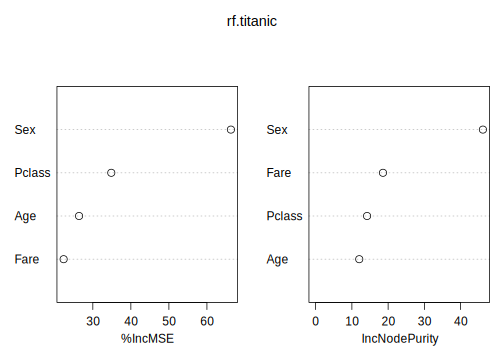
#PDP Numeric
partialPlot(rf.titanic, pred.data = train, x.var = "Age") # Age of passenger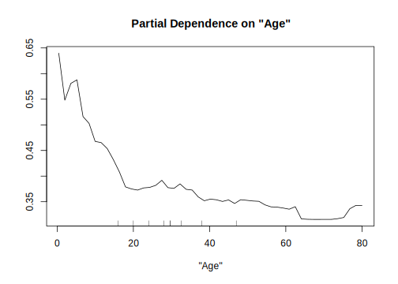
partialPlot(rf.titanic, pred.data = train, x.var = "Fare") # Ticket Fare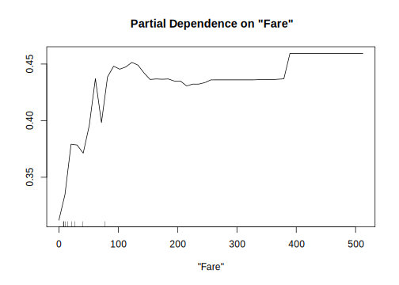
#PDP Categorical
partialPlot(rf.titanic, pred.data = train, x.var = "Sex") # Gender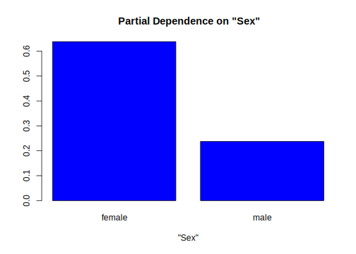
partialPlot(rf.titanic, pred.data = train, x.var = "Pclass") # Class of Ticket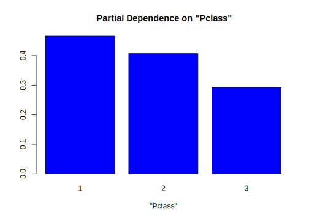
#PDP Two Features
mod = Predictor$new(rf.titanic, data = train)
pdp.obj = Partial$new(mod, feature = c("Age", "Pclass")) ## Warning: The FeatureEffect class replaces the Partial class. Partial will
## be removed in future versions.plot(pdp.obj)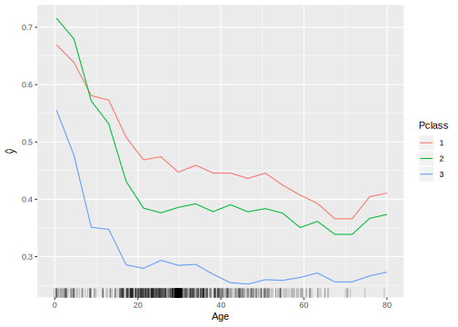
mod = Predictor$new(rf.titanic, data = train)
pdp.obj = Partial$new(mod, feature = c("Age", "Sex")) ## Warning: The FeatureEffect class replaces the Partial class. Partial will
## be removed in future versions.p1 <- plot(pdp.obj)
mod = Predictor$new(rf.titanic, data = train)
pdp.obj = Partial$new(mod, feature = c("Age", "Fare")) ## Warning: The FeatureEffect class replaces the Partial class. Partial will
## be removed in future versions.p2 <- plot(pdp.obj)
grid.arrange(p1, p2, ncol = 2)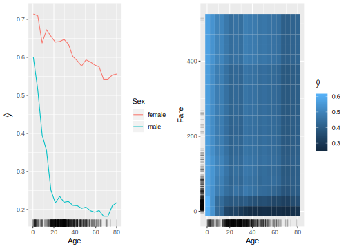
#ICE Numeric
pred.ice <- function(object, newdata) predict(object,newdata)
rf.ice <- partial(rf.titanic, pred.var = "Age", pred.fun=pred.ice)
plotPartial(rf.ice, rug = TRUE, train = train, alpha = 0.3)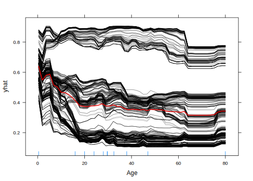
# Post-process rf.ice to obtain c-ICE curves
rf.ice <- rf.ice %>%
group_by(yhat.id) %>% # perform next operation within each yhat.id
mutate(yhat.centered = yhat - first(yhat)) # so each curve starts at yhat = 0
# ICE curves with their average
p1 <- ggplot(rf.ice, aes(Age, yhat)) +
geom_line(aes(group = yhat.id), alpha = 0.2) +
stat_summary(fun.y = mean, geom = "line", col = "red", size = 1)
# c-ICE curves with their average
p2 <- ggplot(rf.ice, aes(Age, yhat.centered)) +
geom_line(aes(group = yhat.id), alpha = 0.2) +
stat_summary(fun.y = mean, geom = "line", col = "red", size = 1)
# Figure 10
grid.arrange(p1, p2, ncol = 2)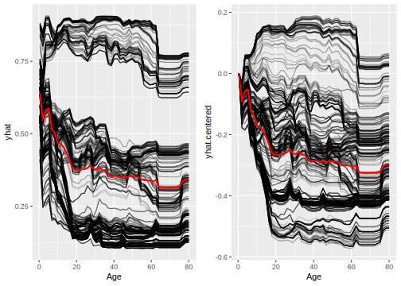
#ICE Categorical
pred.ice <- function(object, newdata) predict(object,newdata)
rf.ice <- partial(rf.titanic, pred.var = "Fare", pred.fun=pred.ice)
plotPartial(rf.ice, rug = TRUE, train = train, alpha = 0.3)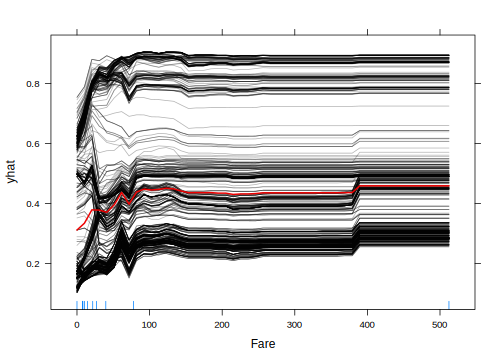
# Post-process rf.ice to obtain c-ICE curves
rf.ice <- rf.ice %>%
group_by(yhat.id) %>% # perform next operation within each yhat.id
mutate(yhat.centered = yhat - first(yhat)) # so each curve starts at yhat = 0
# ICE curves with their average
p1 <- ggplot(rf.ice, aes(Fare, yhat)) +
geom_line(aes(group = yhat.id), alpha = 0.2) +
stat_summary(fun.y = mean, geom = "line", col = "red", size = 1)
# c-ICE curves with their average
p2 <- ggplot(rf.ice, aes(Fare, yhat.centered)) +
geom_line(aes(group = yhat.id), alpha = 0.2) +
stat_summary(fun.y = mean, geom = "line", col = "red", size = 1)
# Figure 10
grid.arrange(p1, p2, ncol = 2)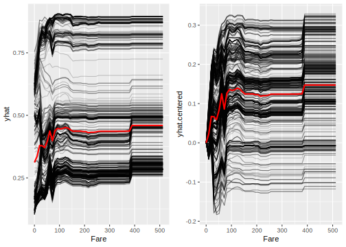